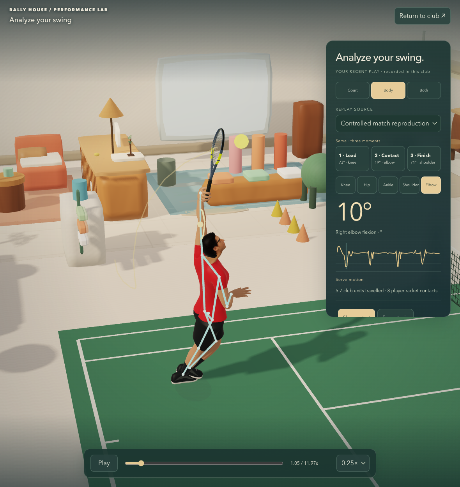
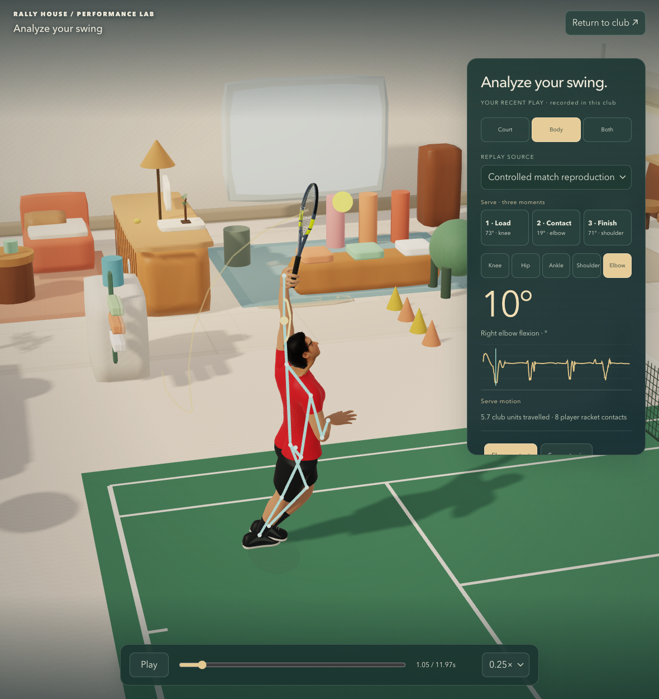
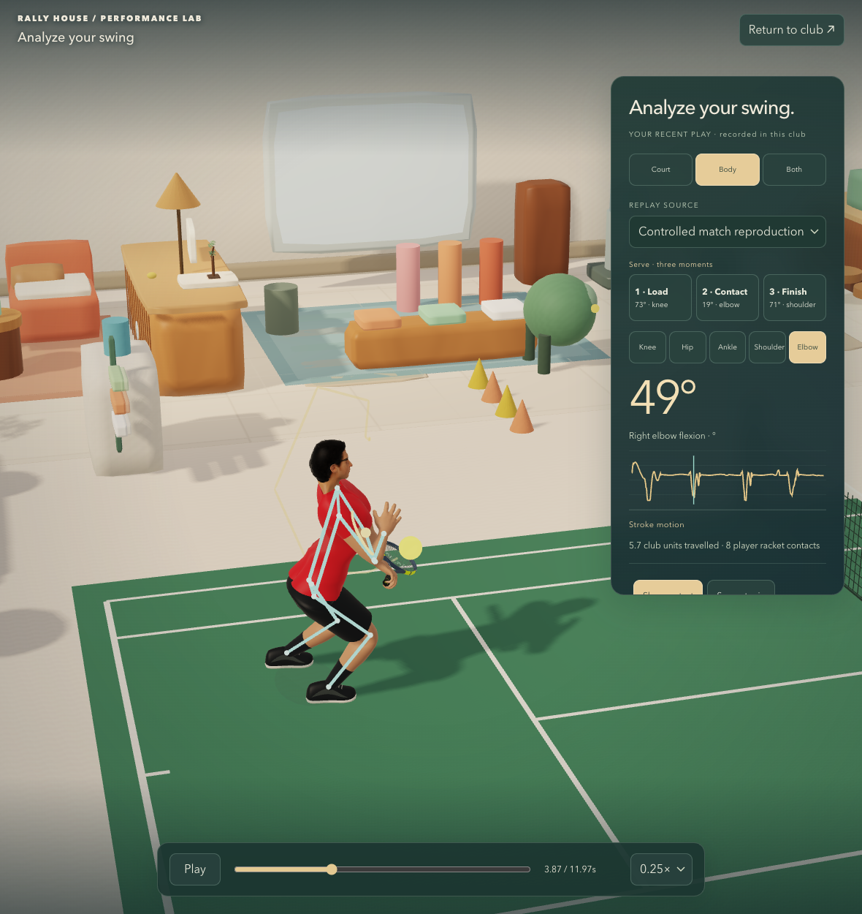
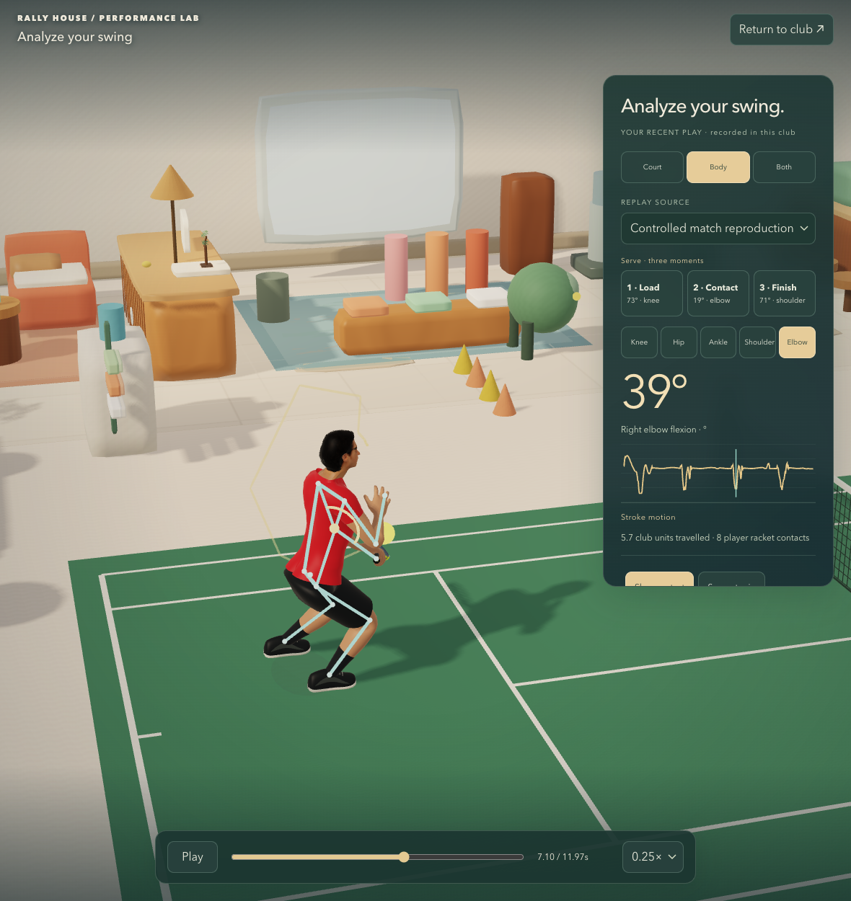
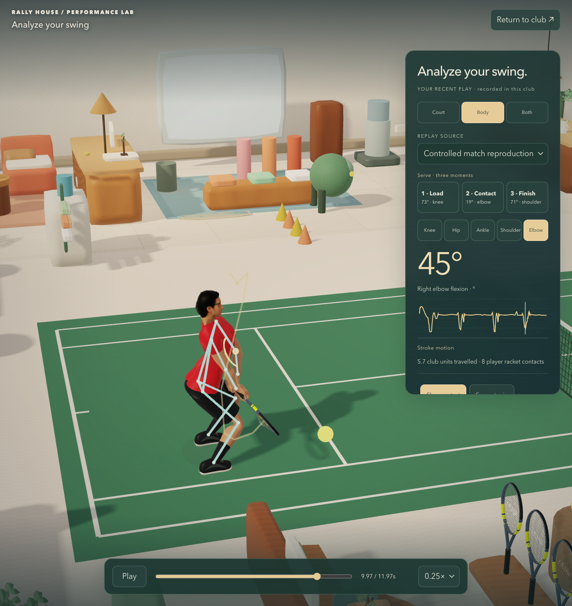
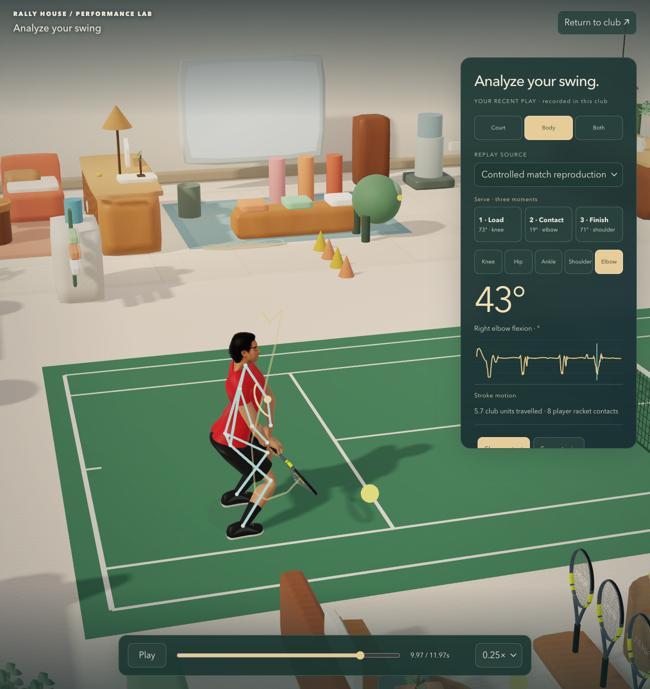
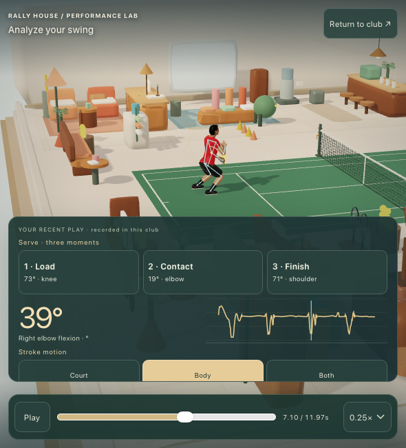

Matched moments from a controlled 12-second match recording, using the same camera and inputs. This reproduces the replay path; it is not the original user recording.
The repair preserves Arjan’s recorded forearm twist and rotates his torso together during a reach. Existing serve motion remains unchanged.






Touch-sized browser check, not a physical iPhone test.
